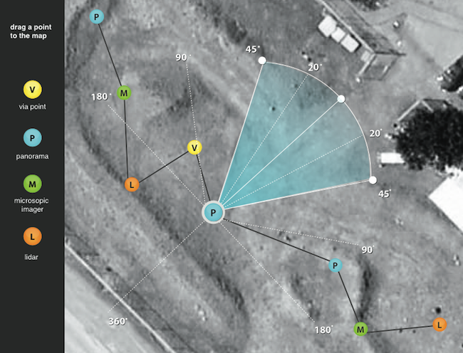
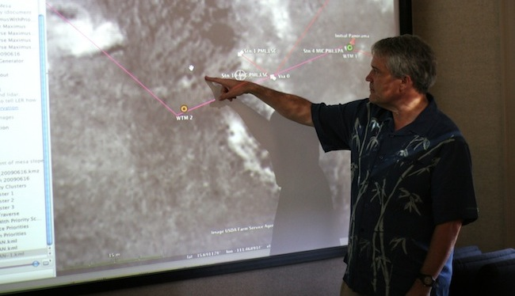
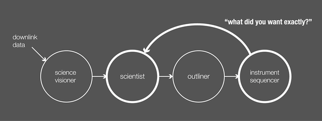
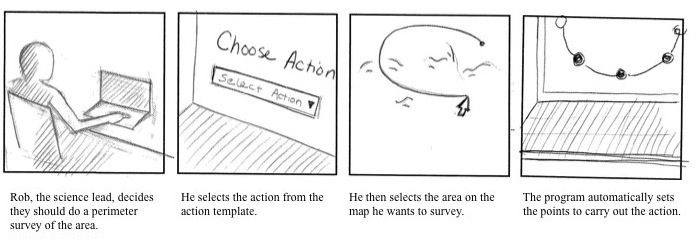
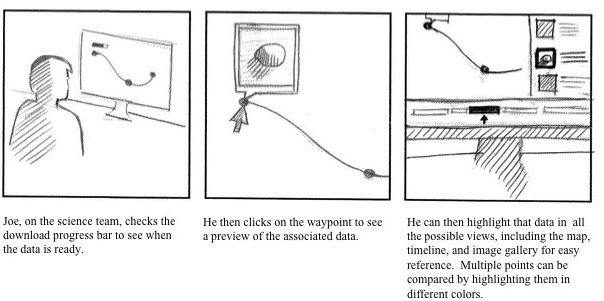
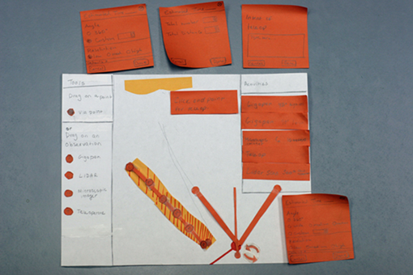
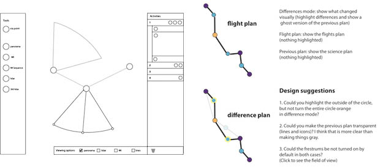
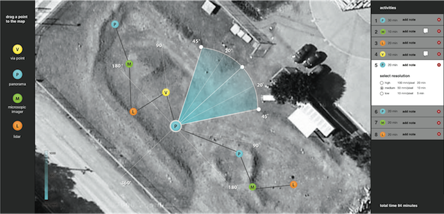

Project Methods
- Contextual Inquiry
- Modeling
- Storyboarding
- Think Aloud Testing
- Paper Prototyping
- Flash Prototyping
- Wireframing
Related Projects


Coveyance Robotic Planning
I designed software called "Conveyance" that helps scientists plan activities for a lunar rover. We followed a design process involving rounds of brainstorming, rapid prototyping and user testing. I served as the design lead for the project and led the group through ideation, storyboarding, needs validation, low-fidelity prototyping, interactive prototyping and wireframing. Project team: Joanna Bresee, Steve Hellenius, Jon Bidwell, M. Azim Ali and Jessa Hafer-Zdral
User Research
To study robotic planning we performed eleven interviews and six contextual inquiries both inside and outside of NASA. We learned that scientists were not able to communicate plans in a language engineers could use. Scientists were hesitant to interact with planning software and were often unaware of engineering constraints. I contributed by making contacts with NASA mission members, running interviews, conducting contextual inquiries and modeling our data.
 Ideation
We brainstormed ways to help scientists communicate their planning goals. To validate our concepts, I created storyboards and showed them to the team members of the robotic reconnaissance field tests.
 Evaluation
We tested our designs with ten participants using paper prototypes, and seven participants using digital prototypes. In order to test the success of our final design, we simulated a streamlined version of the lunar reconnaissance rover field test. I designed interaction techniques, created low-fidelity and flash prototypes, recruited users, developed a user-study protocol, ran participants and reported usability problems to the development team.
Specification
I created annotated wireframes to specify the look and behavior of the interface. I also created documents to outline the functionality of specific features for developers.
Final Design
The final design allows science team members to easily indicate what data they would like to receive from the rover by allowing them to manipulate camera angle and resolution directly on the map. I skinned the interface for our final design and provided pixel level specifications to the developers.
